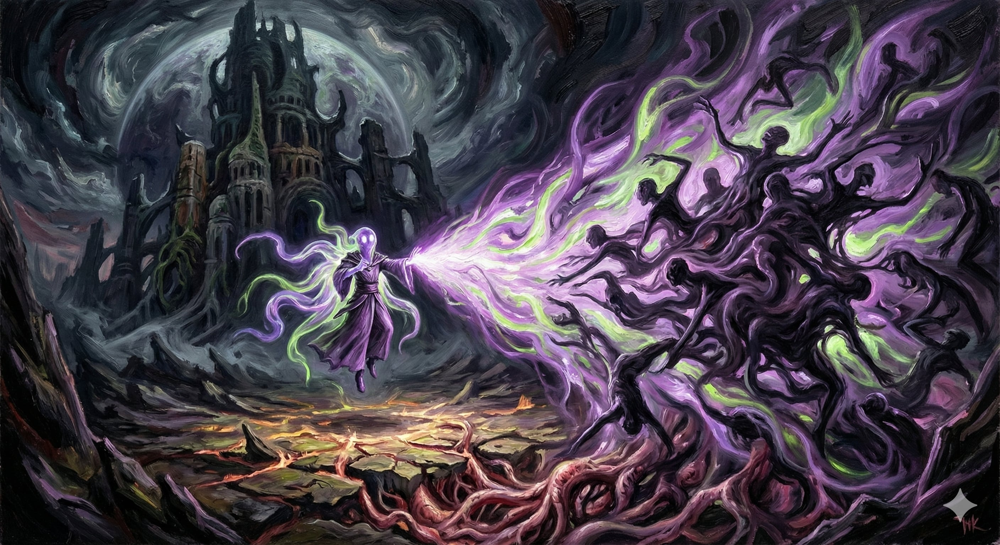

Clerics of the Unity Domain are the serene and unsettling voices of the Mother Bastion. They believe that individuality is a source of pain and conflict. Their magic is one of psychic harmony and absolute control.
| Level | Spells |
|---|---|
| 1st | Command, Charm Person |
| 3rd | Calm Emotions, Spike Growth |
| 5th | Meld into Stone, Hypnotic Pattern |
| 7th | Stone Shape, Compulsion |
| 9th | Animate Objects, Dominate Person |
At 1st level, you gain proficiency in Persuasion or Insight. You can communicate telepathically (30 ft). You learn Friends; when it ends, make a contested Cha (Persuasion) check to prevent hostility.
Action: Reshape earth within 60 ft.
— Grasping Pillar: Target makes Dex save or is Restrained and lifted 10 ft.
— Stone Barrier: Create total cover (10x10ft wall). Lasts 1 minute.
Action: Hostile creatures within 30 ft make Wisdom save. On fail, they are Charmed (pacified) for 1 minute. They cannot attack you/allies unless attacked first.
At 6th level, you gain resistance to Psychic damage. Bonus Action: Target a creature charmed by you. It must make a Str save or be Restrained by earthen tendrils.
At 17th level, Action: 60-foot cone. Wisdom save. Fail: 10d8 psychic damage and Stunned. Success: Half damage.